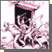
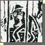
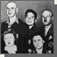

| 1920 |  | Mihály Biró’s (1886–1948) drawing from his Horthy series |
| 1938– 1941 |
 | Endre Bálint (1914–1986), Feeding the Jews is forbidden |
| 1940s | Lipót Herman (1884–1972), In order to make a living you have to dance even with Jóska | |
| 1944 | A leaflet of the Hungarian National Socialist Party | |
| 1944 |  | Family portrait in the spring of 1944 |
| Epilogue | Jewish wedding ceremony in the Heroes’ Temple in Budapest, 1993 | |